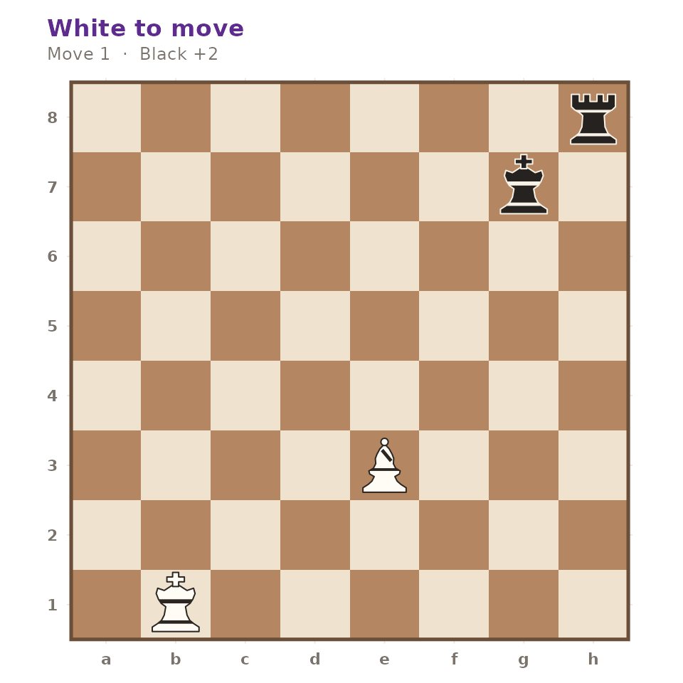
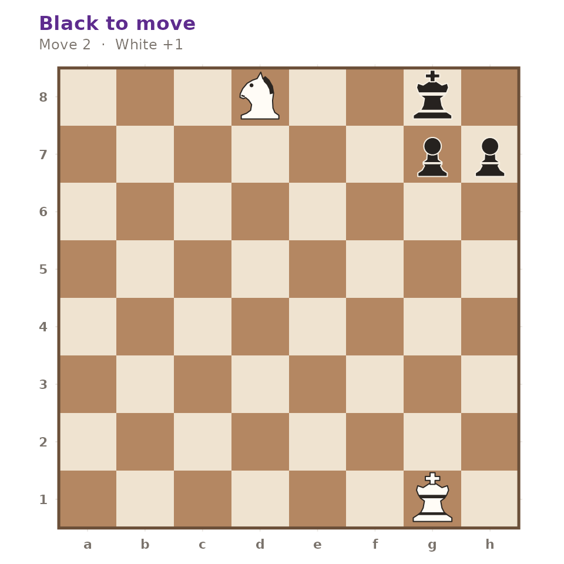

The puzzle trainer is a small set of tactical positions with verified solutions, plus a checker that scores an attempt against them.
Drawing a puzzle
gm_puzzle() returns a gm_puzzle: the
position, the solution as a vector of moves in standard algebraic
notation, a theme and a rating.
puzzle <- gm_puzzle(seed = 1)
puzzle
#> <gm_puzzle> "gm-0009" — theme "skewer", rating 1100
#> White to move, 1 move to find
#> 8 · · · · · · · ♜
#> 7 · · · · · · ♚ ·
#> 6 · · · · · · · ·
#> 5 · · · · · · · ·
#> 4 · · · · · · · ·
#> 3 · · · · ♗ · · ·
#> 2 · · · · · · · ·
#> 1 · ♔ · · · · · ·
#> a b c d e f g h
puzzle$theme
#> [1] "skewer"
puzzle$rating
#> [1] 1100
puzzle$solution
#> [1] "Bd4+"The position is an ordinary gm_position, so everything
else in the package applies to it.
gm_plot_board(puzzle$position)
gm_status(puzzle$position)
#> [1] "normal"Choosing what to practise
A puzzle can be selected by id, filtered by theme, or drawn at random under a seed for reproducibility.
gm_puzzle(id = "gm-0005")$solution
#> [1] "Nf7#"
gm_puzzle(theme = "mateIn2", seed = 1)$solution
#> [1] "Qg2" "Kh7" "Qg7#"
identical(gm_puzzle(seed = 42)$id, gm_puzzle(seed = 42)$id)
#> [1] TRUEAsking for something that does not exist is an error rather than an empty draw, and the message lists what is available.
gm_puzzle(theme = "zugzwang")
#> Error in `gm_puzzle()`:
#> ! No puzzle with theme "zugzwang".
#> ℹ Available themes are "backRank", "fork", "hangingPiece", "mateIn1",
#> "mateIn2", "pin", "promotion", and "skewer".Checking an attempt
gm_check_solution() compares an attempt against the
solution as a prefix, so it reports partial progress rather than a bare
pass or fail.
fork <- gm_puzzle(id = "gm-0008")
fork$solution
#> [1] "Nf7+" "Kg8" "Nxd8"
gm_check_solution(fork, character())
#> # A tibble: 1 × 3
#> correct solved_plies total_plies
#> <lgl> <int> <int>
#> 1 FALSE 0 3
gm_check_solution(fork, fork$solution[1])
#> # A tibble: 1 × 3
#> correct solved_plies total_plies
#> <lgl> <int> <int>
#> 1 FALSE 1 3
gm_check_solution(fork, fork$solution)
#> # A tibble: 1 × 3
#> correct solved_plies total_plies
#> <lgl> <int> <int>
#> 1 TRUE 3 3A wrong first move scores zero, however plausible it looks.
gm_check_solution(fork, c("Ne4", "Kg8", "Nxd8"))
#> # A tibble: 1 × 3
#> correct solved_plies total_plies
#> <lgl> <int> <int>
#> 1 FALSE 0 3Check, mate and annotation marks are ignored, so an attempt written
Ra8 is accepted for a solution written
Ra8#.
back_rank <- gm_puzzle(id = "gm-0001")
gm_check_solution(back_rank, "Ra8")$correct
#> [1] TRUE
gm_check_solution(back_rank, "Ra8#!!")$correct
#> [1] TRUESolving one by hand
Because the solution is just a sequence of moves, it replays like any other line.
position <- fork$position
for (san in fork$solution) {
position <- gm_move(position, san)
}
gm_plot_board(position)
Black’s reply in that line is forced: after the knight check the king has exactly one square, which is why the fork wins the rook.
after_check <- gm_move(fork$position, fork$solution[[1]])
gm_legal_moves(after_check)$san
#> [1] "Kg8"Where the data comes from
The set lives in inst/extdata/puzzles.rds and is
generated by data-raw/puzzles.R. That script verifies every
puzzle against the move generator before it is written: the position
must be legal, each move of the solution must be legal in turn, every
opponent reply must be the only legal move available, and any line
ending in # must really end in checkmate. The Puzzles tab
of gm_run_app() wraps the same two functions in an
interactive board.